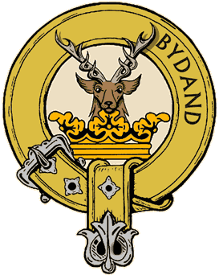
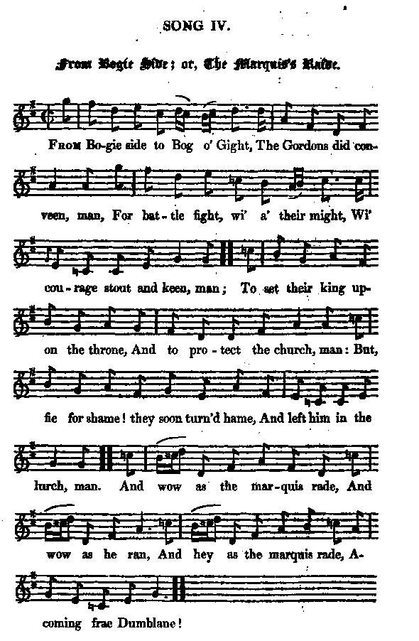
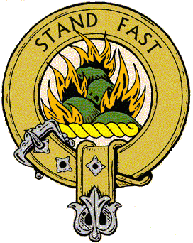

From Bogie Side to Bog o'Gight
Entre le Bog o'Gight et Bogieside
Gordons and Grants at Sherrifmuir
|
SHERIFFMUIR - SHERRIFMUIR - SHERRAMOOR Rough location map (bottom half) Map of the battle field |
Tune - Mélodie
"The Lasses of Stewarton"
from Hogg's "Jacobite Relics" 2nd Series N°63
Sequenced by Christian Souchon
|
 |
 |
 |
|
To the tune: "I got the song from the portfolio of a friend, who was likewise a great friend to the Gordons. It was written in an old hand, on a sheet of coarse paper. He gave it me with some reluctance, saying, when it came to his hand, that here was an excellent and genuine old song, but it was so bitter against the Gordons, it would not be fair to publish it. I said it was a pity to leave such a genuine old party song out, however inveterate in its spirit. That I rather liked it the better, and persisted in requesting it. " Well," said he, " if you publish it, the consequence will be, that you will be obliged to fight duels with every one of the Gordons individually; I shall be blameless." " I will take my chance of that," returned I, " for if any of them challenge me, I will put them into the police-office." The air to which it is set, approaches nearly to a reel called " The Lasses of Stewarton," but it sings fully better to " There's nae Luck about the House," which indeed differs but slightly from the other." Source "Jacobite relics", vol II. John Glen (1891) finds the earliest appearance of the tune "Lasses of Stewarton" in print in Edinburgh publisher Neil Stewart's "Collection of Newest and Best Reels or Country Dances" (1761, pg. 46). It was published again by Stewart in an edition of 1775, then subsequently appears in several later publications: - Gow's "Complete Repository", Part 1, 1799; pg. 35. - Kerr's "Merry Melodies", vol. 3; No. 24, 1880, pg. 5. - MacDonald's "Skye Collection", 1887; pg. 37. - Stewart-Robertson's "Athole Collection", 1884; pg. 94... Source: "Fiddler's companion", see links As for "There's nae Luck" (which is noticeably different from "The Lasses") it is the tune accompanying the song "Tho' Geordie sits"" |
A propos de la mélodie: " Je tiens ce chant du portefeuille d'un ami qui était sans doute également un ami des Gordon. Il était rédigé dans une écriture ancienne sur un simple morceau de papier. Il me l'a donné avec une certaine hésitation, lorsqu'il l'eut pris en main, disant que c'était là un excellent et véritable chant ancien, mais tellement virulent à l'encontre des Gordon, qu'il ne serait pas séant de le publier. Je répondis qu'il était dommage qu'un tel chant satyrique, aussi véritable que vénérable, reste ignoré du public, même s'il était empreint d'un humour suranné; que je ne l'en aimais que plus et que j'insistais pour l'avoir. "Eh bien", dit-il, "si vous le publiez, il vous incombera de répondre à toutes les provocations en duel que vous adressera chaque Gordon, individuellement; moi, je vous aurai prévenu." "J'accepte de courir ce risque", dis-je à mon tour, "le premier qui me provoque, je le dénonce à la police". L'air sur lequel cette pièce se chante ressemble fort à un reel appelé "Les filles de Stewarton", mais il va beaucoup mieux avec "La chance déserte ce logis", qui n'est d'ailleurs pas très différent du précédent." Source "Jacobite relics", vol II. John Glen (1891) indique que, selon lui, la plus ancienne publication imprimée de la mélodie intitulée "Les filles de Stewarton" est dûe à l'éditeur édimbourgeois Neil Stewart dans sa "Collection of Newest and Best Reels or Country Dances" (1761, pg. 46). Elle fut publiée à nouveau par Stewart en 1775, puis on la trouve dans de nombreuses publications plus tardives: - Gow's "Complete Repository", Part 1, 1799; pg. 35. - Kerr's "Merry Melodies", vol. 3; No. 24, 1880, pg. 5. - MacDonald's "Skye Collection", 1887; pg. 37. - Stewart-Robertson's "Athole Collection", 1884; pg. 94... Source: "Fiddler's companion", see links Quant à "La chance..." (qui est sensiblement différente des "Filles..."), c'est la mélodie qui accompagne le chant "Bien que Georges". |

|
FROM BOGIE SIDE or THE MARQUIS'S RAIDE [1] 1.From Bogie side to Bog o' Gight, The Gordons [2] did conveen, man, For battle fight, wi' a' their might, Wi' courage stout and keen, man; (twice) To set their king upon the throne, And to protect the church, man: But, fie for shame! they soon turn'd hame, And left him in the lurch,man. (twice) And vow as the marquis rade, And wow as he ran, And hey as the marquis rade, A- coming from Dumblane! (twice) 2. The marquis' horse were first set on, Glen-Bucket's men to back them, Who swore that great feats they would do, If rebels durst attack them. Wi' great huzzas to Huntly's praise They mov'd Dunfermline green, man ; But fifty Grants, and deil ane mae, Turn'd a' their beets to sheen, man. [3] And wow, &c. 3. Out cam the knight of Gordonston, Forth stepping on the green, man: He had a wisp in ilka hand, To dight the marquis clean, man; For the marquis he b—s—t himsel, The Enzie was na clean, man; And wow as the marquis rade, A-coming frae Dumblane, man ! And wow, &c. 4. Their chief he is a man of fame, And doughty deeds has wrought, man, Which future ages still shall name, And tell how well he fought, man: For when the battle was begun, Immediately his grace, man, Put spurs to Florence, and so ran, By a' he wan the race, man. And wow, &c. 5. When they went into Sherramuir, Wi' courage stout and keen, man, Wha wad hae thought the Gordons gay That day wad quat the green, man ? Auchluncart and Auchanochie, Wi' a' the Gordon tribe, man, Like their great marquis, they could not The smell o' powder bide, man. And wow, &c. 6. Glen- Bucket cried, " Curse on you a' !" For Gordons do nae gude, man ; The first o' them that ran awa Was o' the Seton blood, man. Glassturam swore it wasna sae, And that he'd make appear, man ; For he a Seton stood that day, When Gordons ran for fear, man. And wow, &c. 7. Sir James of Park he left his horse In the middle of a wall, man, And wadna stay to take him out, For fear a knight should fall, man. Magon he let the reird gae out, Which shows a panic fear, man ; Till Craigiehead swore he was shot, And curs'd the chance o' weir, man. And wow, &c. 8. Clunie [4] play'd a game at chess, As well as any thing, man, But, like the knavish Gordon race, Gave check unto the king, man. He plainly saw, without a queen The game would not recover, So therefore he withdrew his knight, And join'd the rock Hanover. And wow,&c. 9. The master, wi' the bully's face, And wi' the coward's heart, man, Wha never fail'd, to his disgrace, To act a coward's part, man, He join'd Dunbog, the greatest rogue In a' the shire o' Fife, man, Wha was the first the cause to leave, By counsel o' his wife, man. And wow, &c 10. A member o' the tricking tribe, An Ogilvie by name, man, Counsellor was to th' Grumbling Club, To his eternal shame, man. Wha wad hae thought, when he went out, That ever he wad fail, man ? Or like that he wad eat the cow, And worry on the tail, man ? And wow, &c. 11. At Poincle Boat great Frank Stewart, A valiant hero stood, man, In acting of a loyal part, 'Cause of the loyal blood, man: But when he fand, at Sherramuir, That battling wadna do it, He, brother-like, did quit the ground, But ne'er came back unto it. And wow, &c. 12. Brimestone swore it wasna fear That made him stay behin', man, But that he had resolv'd that day To sleep in a hale skin, man. The gout, he said, made him take bed, When first the fray began, man; But when he heard the marquis fled, He took to's heels and ran, man. And wow, &c. 13. Methven Smith, at Sherramuir, Made them believe he fought, man, But weel I wat it wasna sae, For a' he did was nought, man: For towards night, when Mar drew off, Smith was put in the rear, man; He curs'd, he swore, he bullied off, And durstna stay for fear, man. And wow, &c. 14. At the first he did appear A man of good renown, man; But lang ere a' the play was play'd, He prov'd an arrant loon, man. For Mar against a loyal war, A letter he did forge, man; Against his prince he wrote nonsense, And swore by German George, man. And wow, &c. 15. The Gordons they are kittle flaws, They fight wi' courage keen, man, When they meet in Strathbogie's ha's On Thursday's afterneen, man: But when the Grants came down Spey side, The Enzie shook for fear, man, And a' the lairds ga'e up themsels, Their horse and riding gear, man. [5] And wow as the marquis rade, And wow as he ran, And hey as the marquis rade, A-coming frae Dunblane! Source: "The Jacobite Relics of Scotland, being the Songs, Airs and Legends of the Adherents to the House of Stuart" collected by James Hogg, Volume II published in Edinburgh by William Blackwood in 1821. |
DE BOGIE SIDE A BOG O' GICHT [1] 1. Entre le Bog o'Gicht et Bogieside Les Gordon [2] se rassemblent. Jetant hardiment dans la bataille Toute leur force ensemble; (bis) C'est pour rendre un trône à leur Roi Et protéger l'Eglise. Mais chacun, pouah!, rentra chez soi. Sa cause est compromise... (bis) Comme il a chevauché, le marquis! Comme il est hors d'haleine! Comme il a chevauché le marquis! Il revient de Dumblane! (bis) 2. En tête, les cavaliers du marquis, Que Glenbucket seconde Ont juré de faire à l'ennemi Subir un sort immonde. A Dumfermline, qu'ils ont quitté Tout verts, on les acclame. Mais cinquante Grant, ont teinté Leur front d'un rouge infâme. [3] Comme il a chevauché, le marquis!, etc. 3. Voilà le chevalier de Gordonston Qui sort sur l'herbe verte, Tenant dans chaque main un chiffon Pour nettoyer son maître; Le marquis de m...e est enduit! Enzie, gare à ta cotte! Tant il chevaucha, le marquis! Qu'il s'est couvert de crotte! Comme il a chevauché, le marquis!, etc. 4. Oui, leur chef est un homme de renom, Qui sort de l'ordinaire. Les âges à venir le diront: C'est un foudre de guerre. Dès le premier coup de pétard, Le marquis, pris de frousse, Eperonne Florence et part. Il a gagné la course! Comme il a chevauché, le marquis!, etc. 5. Lorsqu'ils se déployaient sur Sherramoor, Fiers et remplis d'audace, L'eusses-tu cru que Gordon, le jour Même eût vidé la place? Auchluncart et Auchanochy, Plutôt que d'en découdre, Tels les Gordon et leur marquis, Fuirent l'odeur de poudre! Comme il a chevauché, le marquis!, etc. 6. Glenbucket s'écria "Soyez maudits!" Vous n'êtes que des traîtres. Le premier d'entre vous qui partit A Seton pour ancêtre." Glassturam dit: "Ce n'est pas vrai! En tout cas, c'est trop dire: Moi, un Seton, je suis resté, Quand les Gordon s'enfuirent." Comme il a chevauché, le marquis!, etc. 7. Sir James de Park au milieu d'un talus A perdu sa monture, Laissant là, de peur qu'un autre ne chût La pauvre créature. Magon laisse partir un pet, Ne se contrôlant guère. Craigiehead crie "Je suis touché!" Les hasards de la guerre! Comme il a chevauché, le marquis!, etc. 8. Clunie [4] connaissant les échecs, ma foi, Aussi bien qu'autre chose Décida de faire échec au roi, Comme Gordon, il l'ose. Il sait que sans dame on ne peut Gagner: on est bien pauvre. Il ramène son cavalier Vers la tour des Hanovre. Comme il a chevauché, le marquis!, etc. 9. Si le maître à la face d'un brutal Il a le coeur d'un lâche. Jamais il n'omet de faire mal Méritant sa disgrâce. Il fraye avec Dunbog le pi- Re bandit de tout Fife. Ce fut le premier qui trahit Sur l'ordre de sa femme Comme il a chevauché, le marquis!, etc. 10. Un autre parmi ces fieffés larrons, Ogilvy, ce me semble, Fut le conseiller de tous ces grognons, Honte à qui lui ressemble! Qui donc eût dit, quand il sortit, Qu'il deviendrait un traître? Ou l'un de ces mangeurs de bœufs Qui pour les queues s'inquiètent? Comme il a chevauché, le marquis!, etc. 11. Sur son bateau François Stuart Se tient avec prestige. On est loyal et non couard, Car sang royal oblige. Mais dès qu'il a vu qu'à Dunblane, L'issue serait fatale, En bon frère il quitte la plaine A jamais. Il détale. Comme il a chevauché, le marquis!, etc. 12. Brimestone dit que ce n'était point par peur Qu'il restait à l'arrière. Mais sauver sa peau était le meilleur Choix que l'on pouvait faire. Sa goutte! Il veut aller au lit, Quand l'affaire s'engage. Mais, voyant le marquis qui fuit, Il court avec courage. Comme il a chevauché, le marquis!, etc. 13. Methven Smith fit semblant à Sherramor D'être là pour combattre Mais tout ce qu'il fit, j'en suis sûr, Ne fut que simulacre, Car vers le soir, quand partit Mar, Smith rejoignit l'arrière; Foin des jurons! Ce fanfaron! Abandonnait l'affaire. Comme il a chevauché, le marquis!, etc. 14. Si même il apparut au tout début Auréolé de gloire, Avant même que tout soit perdu, C'était une autre histoire! Pour Mar il fabrique un écrit Qu'un vrai soldat réprouve. Quant à son Prince, il le maudit Tout en encensant Georges. Comme il a chevauché, le marquis!, etc. 15. Gordon, ton courage est bien inégal: Tu montres ta vaillance Avec les tiens à Strathbogie Hall Le jeudi soir, je pense. Mais quand les Grant longent la Spey Les fils d'Enzie frissonnent, Laissant là chevaux et harnais, Ces messieurs abandonnent. [5] Comme il a chevauché, le marquis! Comme il est hors d'haleine! Comme il a chevauché le marquis! Il revient de Dumblane! (Trad. Christian Souchon(c)2010) |
|
[1] This song is exclusively a party song, made by some of the Grants or their adherents, in obloquy of their more potent neighbours the Gordons. It is in a great measure untrue; for, though the marquis of Huntly was on the left wing at the head of a body of horse, and among the gentlemen that fled, yet two battalions of Gordons, or at least of Gordon's vassals, perhaps mostly of the Clan-Chattan, behaved themselves as well as any on the field; and were particularly instrumental in breaking the Whig cavalry, on the left wing of their army, and driving them back among their foot. On this account, as well as that of the bitter personalities that it contains, the song is only curious as an inveterate party song, and not as a genuine humorous description of the fright that the marquis and his friends were in. [2] Gordons —Alexander Gordon, marquis of Huntly, afterwards second duke of Gordon, joined the chevalier's standard with a large body of horse and foot, at Perth, 6th October; and was present at the battle of Sheriffmuir. There were, besides, several gentlemen of the name, but the men whom he brought to the field, were only retainers of his, of all names and descriptions, for the Gordons having been originally a Border family, they had no clan of their own. [3] The latter part of the second stanza seems to allude to an engagement that took place at Dollar, on the 24th October, a fortnight previous to the battle of Sheriffmuir. Mar had despatched a small body of cavalry to force an assessment from the town of Dunfermline, of which Argyll getting notice, sent out a stronger party, who surprised them early in the morning before day light, and worsted them, killing some and taking seventeen prisoners, several of whom were Gordons. [4] Cluny is the chief of Clan McPherson. [5] The last stanza evidently alludes to the final submission of the marquis and the rest of the Gordons to king George's government, which they did to the Grants and the earl of Sutherland. The former had previously taken possession of Castle Gordon ; of course the malicious bard of the Grants, with his ill-scraped pen, was not to let that instance of the humiliation of his illustrious neighbours pass unnoticed. Source "Jacobite relics", vol II. |
[1] Ce chant de parti - qui assume totalement sa partialité - fut composé par un membre du Clan Grant ou d'un clan affilié, pour dénigrer leurs voisins plus puissants, les Gordon. Dans une large mesure, il est mensonger: En effet, bien que le marquis de Huntly, qui se trouvait à l'aile gauche à la tête d'un détachement de cavalerie, ait été du nombre de ceux qui ont fui, l y eut deux bataillons de Gordon ou de vassaux des Gordon, peut-être du Clan Chattan, qui se comportèrent en vrais soldats sur le champ de bataille. Ils portèrent des coups décisifs à la cavalerie des Whigs sur l'aile gauche de leur armée et la repoussèrent jusque parmi leurs fantassins. Ceci dit, sous réserve des attaques personnelles qu'il renferme, l'intérêt de ce chant est plus d'être un ancien chant partisan, qu'une relation fidèle de la panique qui s'empara du marquis et ses amis. [2] Alexandre Gordon, marquis de Huntly, puis 2ème duc de Gordon, accourut sous l'étendard du Chevalier de Saint Georges avec de nombreux cavaliers et fantassins à Perth, le 6 octobre et prit part à la bataille de Sherrifmuir. Il y eut bien d'autres gentilshommes qui répondaient à ce vocable, alors que Gordon mena au champ de bataille des serviteurs de sa maison, aux noms et titres les plus divers. La famille Gordon, issue à l'origine des "Borders" ne disposait pas d'un clan en propre. [3] La 2ème partie du second couplet semble viser un engagement qui eut lieu à Dollar, le 24 octobre 1715, 15 jours avant Sherrifmuir. Mar avait envoyé un petit détachement de cavalerie, pour provoquer une épreuve de force à partir de Dunfermline. Argyll s'en rendit compte et envoya un détachement plus important, qui surprit les Gordon de bon matin avant l'aube, les bouscula, en tuant quelques uns et en faisant dix-sept prisonniers, dont plusieurs étaient du clan honni. [4] Cluny est le chef du Clan McPherson. [5] La dernière strophe fait certainement allusion à l'acte de soumission finale du marquis et du reste de son clan à l'autorité du roi Georges, qui fut reçue par les Grants et le comte de Sutherland. Les premiers avaient préalablement pris possession de Castle Gordon. Bien entendu le malicieux barde des Grants, à la plume imbibée de vinaigre, ne manqua pas d'insister sur l'humiliation subie par ces illustres voisins. Source "Jacobite relics", vol II. |